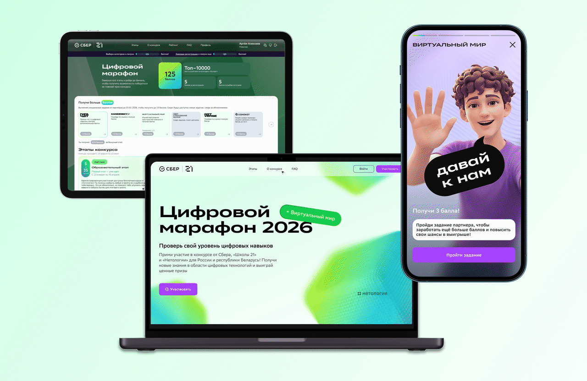
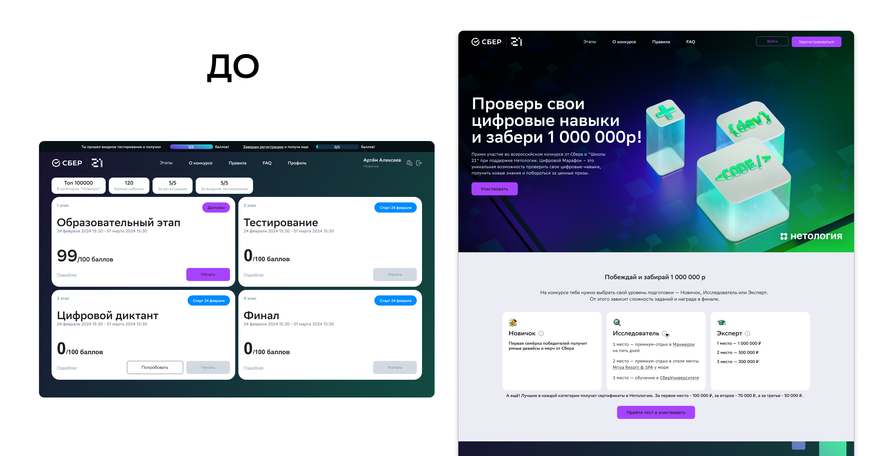
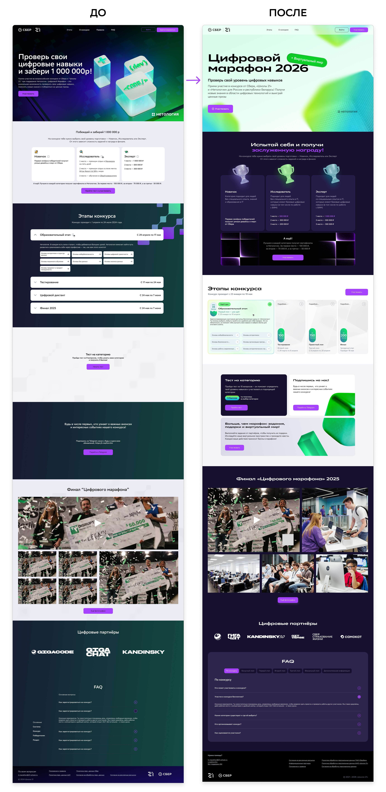
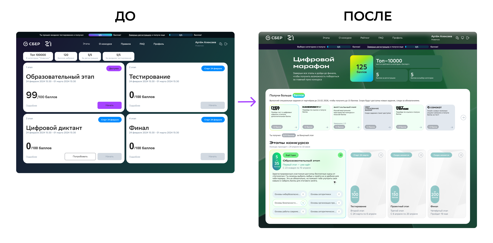
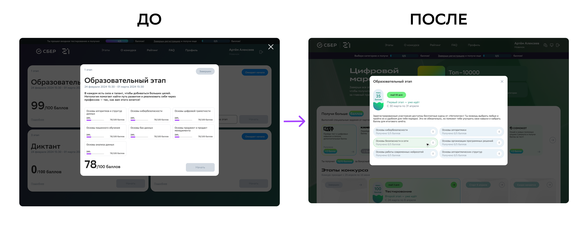
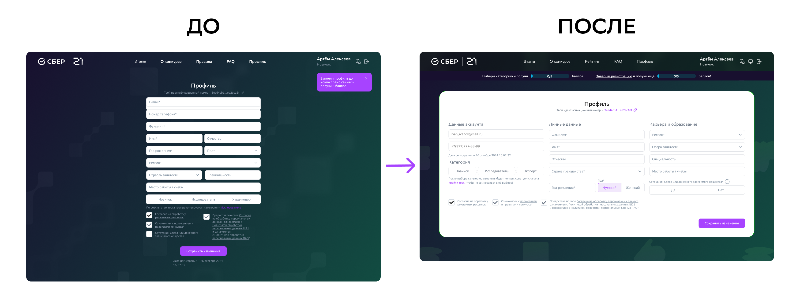
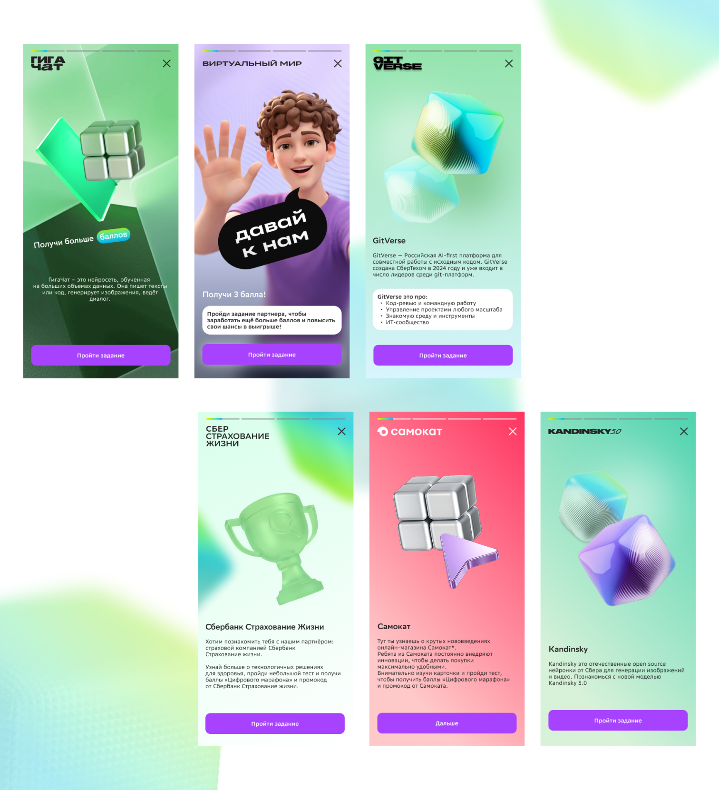
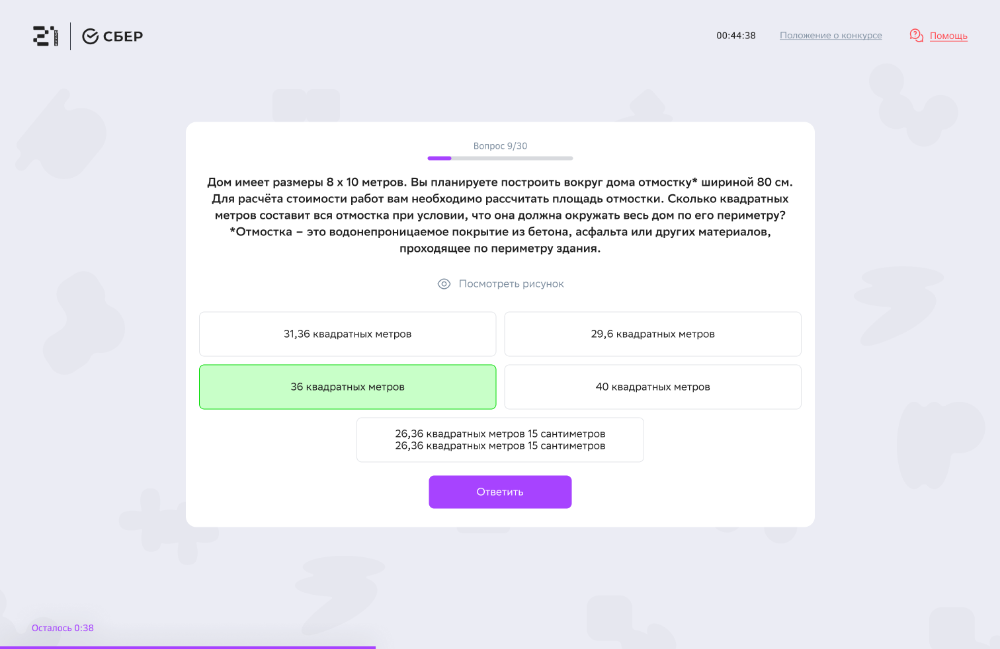
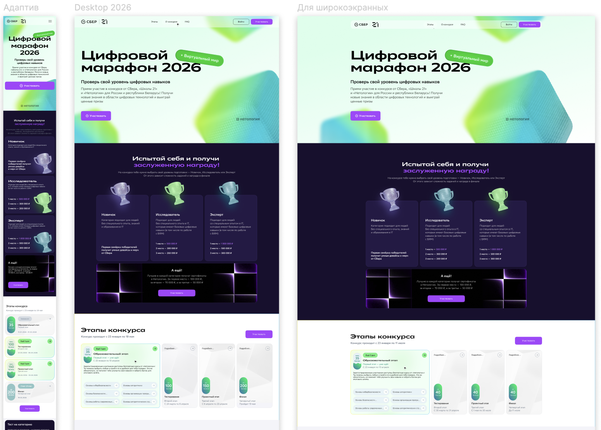

Цифровой марафон
Можно посмотреть
2026

Цифровой марафон
2026
- Контекст
«Цифровой марафон» — всероссийский конкурс по цифровым навыкам от Сбера, «Школы 21» и Нетологии. Участники выбирают один из трёх уровней, проходят бесплатные курсы, онлайн-тестирование и проектный этап, лучшие выходят в очный финал. Платформа состоит из лендинга с регистрацией, личного кабинета участника и модуля тестирования.
- Период
- 2026
- Моя роль
- Продуктовый дизайнер, провела редизайн в соответствии с новой дизайн-системой Сбера.
- Обязанности
- Платформы
Задача
Перевести платформу на новую дизайн-систему Сбера и сделать регистрацию главным сценарием сайта: перестроить лендинг, изменить личный кабинет и ввести асинхронное тестирование. Регистрация открыта ограниченное время, поэтому каждый процент конверсии напрямую влияет на число участников марафона.
Проблематика старой платформы
Перед началом работы я проанализировала прежнюю версию сайта и типичные сценарии пользователей, а также изучила гайдлайны новой дизайн-системы Сбера. Анализ показал три главные проблемы:
- Перегруженная главная. Лендинг был построен как страница о конкурсе, а не как путь к регистрации: описания этапов, призов и партнёров конкурировали друг с другом за внимание.
- Незаметная кнопка регистрации. Главное действие терялось среди контента, участнику приходилось искать, где зарегистрироваться.
- Разнобой в типографике. Лендинг, кабинет и тестирование выглядели как три разных продукта, стиль не соответствовал новой дизайн-системе Сбера и снижал доверие к платформе.

Гипотезы и решения
Если перестроить лендинг вокруг регистрации, конверсия вырастет. Вынесла призыв к регистрации в первый экран и закрепила кнопку при скролле. Разгрузила главную: блоки про уровни, этапы и призы сократила и переписала так, чтобы они снимали сомнения перед регистрацией, а не просто описывали конкурс. Типографику и компоненты привела к дизайн-системе Сбера.

Личный кабинет собрала вокруг пути участника: в разделе «Этапы» марафон показан как трек со статусами, сроками и ближайшим действием. Участник всегда видит, что делать дальше, и не теряется между обучением, тестом и проектным этапом.



Если участник видит своё место среди других и свой прогресс в баллах, у него больше причин дойти до конца. Добавила в «Этапы» статистику: сколько баллов набрал участник и на каком месте он находится в своей категории. Прохождение этапов превращается в понятное соревнование, а не в список заданий.
Если дать способ набрать дополнительные баллы, участники будут возвращаться в кабинет. Ввела в «Этапы» блок интеграций с партнёрами в формате Stories: участник открывает карточку партнёра, выполняет задание и получает дополнительные баллы. Формат знаком по соцсетям, поэтому не требует объяснений и хорошо работает на мобильных.

Тестирование сделала асинхронным: участник проходит его в удобное время в рамках окна этапа. На экране только нужное: один вопрос за раз, прогресс и оставшееся время, ответы сохраняются, чтобы обрыв связи не обнулял результат.

Мобильную версию проектировала как отдельные сценарии, а не как сжатый десктоп: регистрация, тест и Stories партнёров проходятся с телефона одной рукой. Сценарии «Виртуальный мир» и «Самокат» — партнёрские Stories, за которые пользователи получают баллы.
Все три площадки собрала на едином UI-kit в новой дизайн-системе Сбера с адаптивами под десктоп, планшет и мобильные. Согласование макетов вела с бренд-командой Сбера.

Исследования
Перед проектированием разобрала воронку старого сайта: из визита в регистрацию доходили 10% посетителей, основная потеря была на лендинге, до кнопки регистрации доходила лишь часть посетителей. Это определило приоритет: сначала лендинг и flow регистрации, потом кабинет.
Эффект проверяла A/B-тестами на живом трафике во время регистрационной кампании. Старая и новая версии показывались посетителям в равных долях, сравнивали конверсию из визита в регистрацию и долю участников, дошедших до конца этапов.
Что в итоге
Провела редизайн платформы всероссийского конкурса в новой дизайн-системе Сбера: лендинг, личный кабинет с треком этапов, статистикой и Stories партнёров, асинхронное тестирование и адаптивы для трёх типов устройств на едином UI-kit.
- Конверсия из визита в регистрацию выросла с 10% до 20%: исправленный flow и лендинг, построенный вокруг регистрации, удвоили число участников с того же трафика.
- Доля участников, проходящих этапы марафона до конца, выросла в 3 раза: трек этапов, статистика с баллами и местом в категории и Stories партнёров дали причину возвращаться в кабинет.
- Макеты приняты бренд-командой Сбера без правок, запуск состоялся в срок к старту марафона.
Проект показал мне, как работать в рамках жёсткой дизайн-системы и при этом находить выразительные решения.